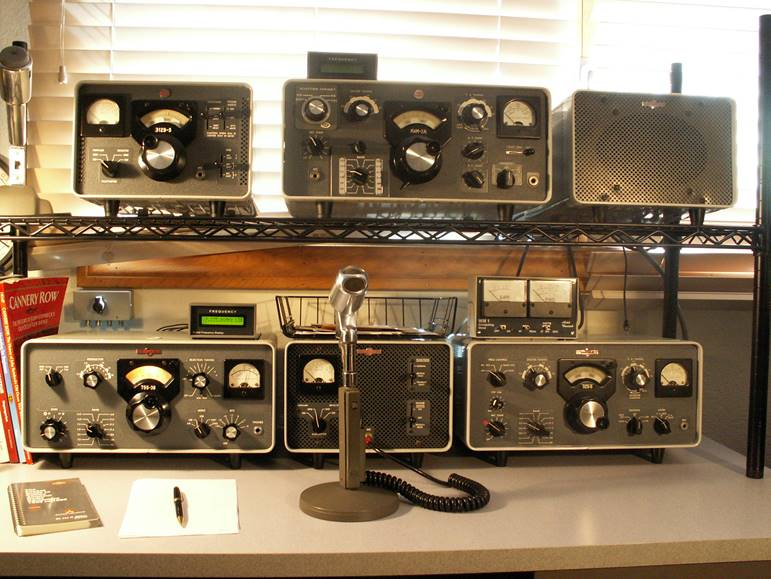

Rob AG6RK –
Great picture Rob. I have been going down that path myself but not so far as spark-gap.
Recently a fire has been lit under me to get back on the S-Line. I’m using it almost daily. Just try to plug a USB cable or RS232 serial interface in to the 75S-3B, 32S-3 or KWM-2A. Yup like some of our members (Dick W6KM and John K6YP come to mind) logs were paper notebooks.
With SDR and FT8 – wait – moving too fast. I want to go back to mixers, IF stages and tubes…
BTW: years ago when my boys were small, the 8 year old opened the lid on one of the S-Line units and asked “Daddy, what are all these light bulbs for?” Ok – there is a generation gap here.

73,
Bob – W6OPO
From: Chat [mailto:chat-bounces@ncdxc.org] On Behalf Of Rob * via Chat
Sent: Thursday, July 12, 2018 2:24 PM
To: chat@ncdxc.org
Subject: Re: [NCDXC Chat] your KH1 DXpedition results
I agree….and I also vote for going back to spark gap…

73,
Rob - AG6RK
On Jul 12, 2018, at 9:29 AM, Rich Seifert via Chat <chat@ncdxc.org> wrote:
I agree that FT8 was useful and effective, particularly for Baker Island. While it may be *easier* than RTTY, it’s *dumber* than RTTY. There is virtually no skill required; a bot could be programmed to run FT8. Indeed, the developers artificially made the software require the user to hit “Enable Transmit” every two minutes just to prove that there was a human at the station. Otherwise, you could set your computer to “automatic” and just run (or chase DX) while you sip Mai-Tais on the veranda. No tuning of the radio required, no decode skills, not even the need to distinguish “real” characters from garbage/noise as in RTTY (in marginal conditions).
It’s a great mode for “getting one in the log,” but it’s pretty boring/mindless, and useless for any real exchange of information. Perfect for computers to acknowledge each others’ presence (which is what it does). That said, I made a few FT8 QSOs with Baker and others (it’s getting hard to find folks on other modes these days), but I’d rather have a CW ragchew.
Bob K6XX used to call RTTY “Homer Simpson’s favorite mode” because of it’s need for only minimal intelligence. (In NAQP RTTY, he uses the name “Homer.”) Whose favorite mode is FT8?
Think of it: Jeff Stai can run SO5R on RTTY (there’s a YouTube video somewhere); each RTTY engine requires little human intervention to keep it going. I can run RTTY in a contest (SO1R) while reading a book, checking my mail, and having a conversation in the shack. If it wasn’t for the “Enable Transmit” button requirement, I could run FT8 without even being there. Just come back in a few hours and see who I worked.
I’m hoping this is not “the future of ham radio”, because it would be a bleak, dysfunctional future. I’m hoping that it will ebb in popularity once we get some sunspots and can go back to modes that allow human interaction and some spontaneity.
Rich KE1B
_______________________________________________
Chat mailing list
Chat@ncdxc.org
http://mail.ncdxc.org/mailman/listinfo/chat_ncdxc.org
Message delivered to robsendemail@yahoo.com